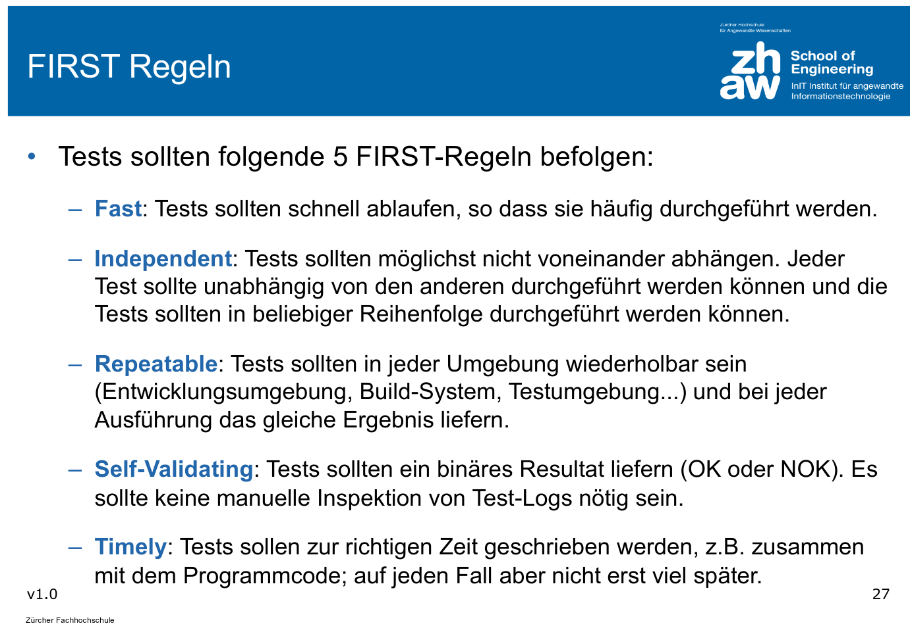
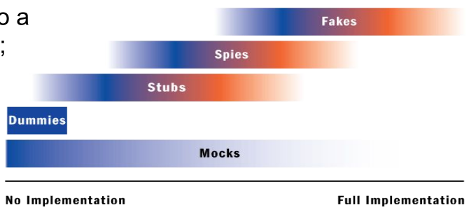

Testing
Äquivalenzklassen
In einer Äquivalenzklassen sind alle möglichen Eingabewerte, welche vom Programm gleich verarbeitet werden.
Dabei gibt es gültige Äquivalenzklassen, welche Werte beinhalten, welche vom Programm verarbeitet werden sollen und es gibt Ungültige Äquivalenzklassen, welche vom Programm erkannt und korrekt behandelt werden sollen (Exception, Return-Value, ...)
Regeln, wenn Äquivalenzklassen gebildet werden:
- Wenn gültige Eingabewerte ein zusammenhängender Wertebereich bilden, so muss eine gültige Äquivalenzklasse und zwei ungültige Äquivalenzklassen gebildet werden
- Wenn Eingabewerte eine Bedinung erfüllen müssen (mit dem Buchstaben ' A' starten), dann muss eine gültige und eine ungültige Äquivalenzklasse gebildet werden.
Aus diesen Äquivalenzklassen können nun Testfälle abgeileit werden. Dabei kann folgendes beachtet werden:
- Ein Testfall darf mehrere gültige Äquivalenzklassen abdecken
- Ein Testfall für ungültige Äquivalenzklassen sollte nur einen ungültigen Wert enhalten
- Grenzwerte sollten berücksichtigt werden
FIRST-Regeln

Definition of Testing
Testing is the process of executing a programm with the intent of finding errors.
Principles of Testing
- Specification of Input and Output For each test case the input and the expected output should be specified.
- Separation of Creation and Testing The developer of the code shouldn't write the test for their code.
- Completeness of Tests Code should always be tested for valid inputs and invalid tests. The natural tendency is to test only the valid inputs.
- Testing is an investement Test cases are reused
- Error Cluster If an error is found in a section of code, the probability of more errors increases. Error-prone Sections should be well tested.
Mock Testing
Mock testing is used when a class with dependencies should be tested. The dependencies can be mocked that it implements the minimal of behaviour to function. This allows to only test the class under testing and not its dependencies.
Different Mocking Types
There are different type of mock classes.

Dummy
Dummies are objects which are never used. They fill parameter lists of methods, if those methods would throw NullPointerExceptions otherwise.
Stubs
A stub is the minimal implementation of an interface. Void method usually don't do anything and methods with a return value will usually return a hard coded value.
Here is an example.
public class EmailStub implements EmailServer {
public void sendMail(String mailTextt) {
// do nothing
}
public String receiveMail() {
return "Mail received"; // a hard coded value
}
}
An EmailDummy would return null in receiveMail() because it is just a dummy.
Spies
Spies are similar to stubs, but record which members were invoked. This information can be checked in unit tests.
Fakes
A fake will implement a class similar to the production class but with shortcuts (e.g. an in-memory database)
Mock
A test double which implements the functions in away which we expect for the test. Depending on how they are implemented, they can function as a dummy, stub, spy or a fake.
Mock testing is usually split in multiple phases:
- Create: The mock object is created
- Specify: The expected behaviour is specified
- Use: The mock object is used in a normal unit test
- Verify behaviour: The mock object is verified
public class OrderInteractionTester extends MockObjectTestCase {
private static String TALISKER = "Talisker";
public void testFillingRemovesInventoryIfInStock() {
// configuration
Order order = new Order(TALISKER, 50);
Mock warehouseMock = new Mock(Warehouse.class);
// expectations
warehouseMock
.expects(once())
.method("hasInventory")
.with(eq(TALISKER),eq(50))
.will(returnValue(true));
warehouseMock
.expects(once())
.method("remove")
.with(eq(TALISKER), eq(50))
.after("hasInventory");
//exercise
order.fill((Warehouse)warehouseMock.proxy());
//verify
warehouseMock.verify();
//verify expected behavior
assertTrue(order.isFilled()); //verify state
}
}
Blacking-Box vs White-Box Testing

In black-box testing (or state testing), only the public interface is known. No assumptions is done about the internal implementaiton. Usually stubbing can be used.
In white-box testing (or behaviour testing) the inner working of the class is known and tested. Here, usually mocking can be used.
Mockito
Create a Mock
Either the method mock(Class<?> clazz) is used or the annotation @Mock for which MockitoAnnotations.openMocks() needs to be called in the setu
Mock Behaviour
To mock the return value of methods, the when(<method>).thenReturn(<value1>).thenReturn(<value2>) pattern can be used. When the returned value should have a bit more logic than a constant value, the thenAnswer(Answer<T>) method can be used (see example below).
To mock an exception throwing method, the doThrow(<exception>).when(<mockObj>).<method>(<args>) pattern needs to be used. The method must support throwing the exception in case of an checked-exception.
There are multiple matchers available, which can match an argument of a mocked method:
- Any-matchers:
anyInt(),anyString(),any(Class<?> clazz), ... - String-matchers:
startsWith(String),endsWith(String),contains(String), ... - Object-matchers:
isNull(),isNotNull(), ... - Compare-matchvers:
eq(T obj), ... - Custom-matchers:
argThat()...,intThat(...), ...
Person mock = mock(Person.class);
// mock return values
when(mock.getName()).thenReturn("Hans").thenReturn("Max");
doReturn(10).doReturn(20).when(mock).getAge();
when(mock.getMessage(anyString())).thenAnswer((InvocationOnMock invocation) -> "hello world");
// mock exception throwing
doThrow(new IllegalArgumentException()).when(mock).setAge(-1);
When an method isn't mocked, then a value is still returned based on the return value:
- The return value is an primitive: The "zero"-primitive is returned
- The return value is a primitive wrapper class: Then the "zero"-primitive of the wrapper class is returned
- The return value is a collection: The return value is an empty collection
- For the toString() method an description of the mock is returned
- For
Comparable#compareTo(T other)returns zero if the references are equal, else a non-zero value - Else:
nullis returned.
Verify Behaviour
Mockito can verify that a method was invoked. For this, the pattern verify(<mock>).<method>(<args>) can be used. With an additional argument of verify, further conditions can be specified. With verify(<mock>, never()).<method>(<args>) can be checked that the method was never invoked. Other condition includes never(), times(int), atLeastOnce(), atLeast(int), atMost(int), timeout(int milliseconds) (that the method is invoked in the given timeout). These conditions can be combined like timeout(10).times(2)
Mockito can also verify the order in which methods were called. For this a InOrder object can be created with inOrder(<mockObj>). On the InOrder object, the verify(...) method can be used.
verify(mockedHalf).contractAtrium();
verify(mockedHalf, times(2)).isAtrioventricularValveOpen();
verify(mockedList, never()).add("ZHAW");
InOrder inOrder = inOrder(singleMock);
// Verify the order
inOrder.verify(singleMock).add("second");
inOrder.verify(singleMock).add("first");
Spies
A spy object is created based on a "real" object. All methods are delegated to this object, but the behaviour of methods can be selectively changed (similar with mocks) and it can verify than methods were called. It can be created with spy(Object obj) and can be used like a mock. Similar to @Mock the @Spy annotation can be used instead of spy(...) (MockitoAnnotations.openMocks() needs to be called in the setup method).
List list = new LinkedList();
// create a spy on the real object instance
List spy = spy(list);
// stub the size() method
when(spy.size()).thenReturn(100);
// add() is not stubbed. So it will use the real method
spy.add("one"); spy.add("two");
assertEquals("one", spy.get(0));
assertEquals(100, spy.size());